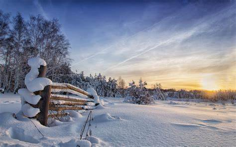

What is there to do in the cold Montana winter?
Everyone knows Montana is known for its cold and snowy winters. Although it gets very cold, there are plenty of activities to do all winter long. One of the most popular winter activities is skiing. Skiing is popular at resorts like Big Sky, Whitefish, Bridger Bowl and Snowbowl (just to name a few). Many of these places get huge dumps of snow many times a year that bring in skiers from states all around. Even if skiing isn't your thing there are still plenty of activities. Snowmobiling is something that allows you to explore the outdoors without too much physical labor, making it a good activity for the entire family. If these high pace activities aren't your thing, there are always things like snowshoeing and icefishing. Montana has thousands of miles of free land to go exploring on with snowshoes. And it also has tons of spots to go dig a hole and ice fish out of. Many people love icefishing in Montana beacuse it gives you an excuse to sit on a lake to look at some beautiful views and breathe in fresh air. After a cold day outside, many people like come warm up in a natural hot tub at a place like Elkhorn Hotsprings. This is one of the many hotsprings in Montana that are cheap and easily accessable for everyone. Almost every town in Montana has one of these within a short drive. So no matter how much you hate the cold, there is always a warm refreshing option anywhere you go.
Follow the links to the left to explore some fun activities in the snow!